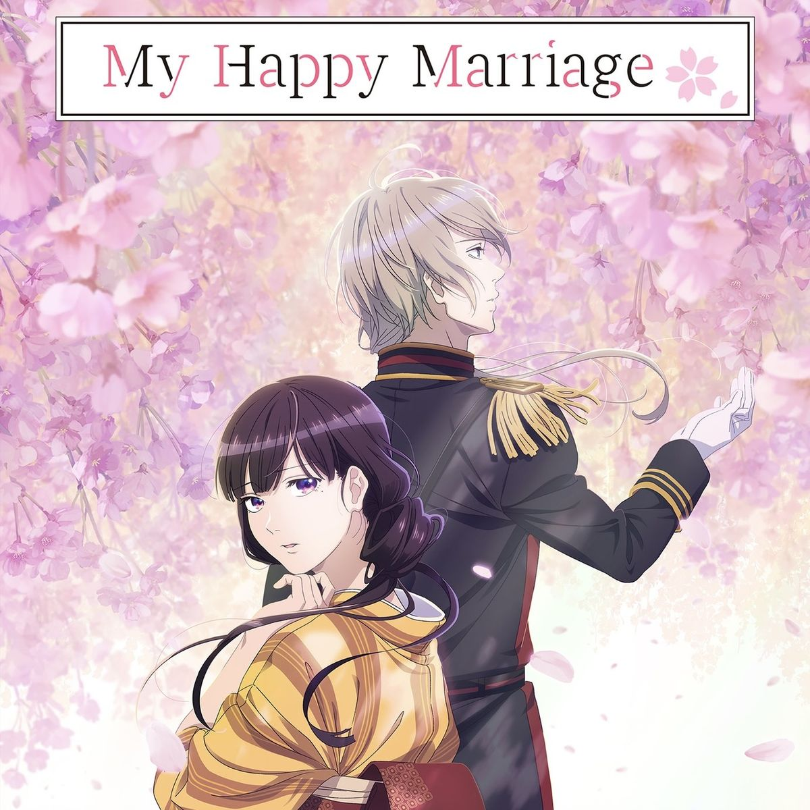

03
My Happy Marriage
A girl who's never been shown kindness is married off to a man with a cold reputation — and instead finds the first real gentleness of her life. It's a quiet, old-fashioned kind of romance: patient, healing.
Why it stuck with me: it is a heart warming story with an actual happy ending.